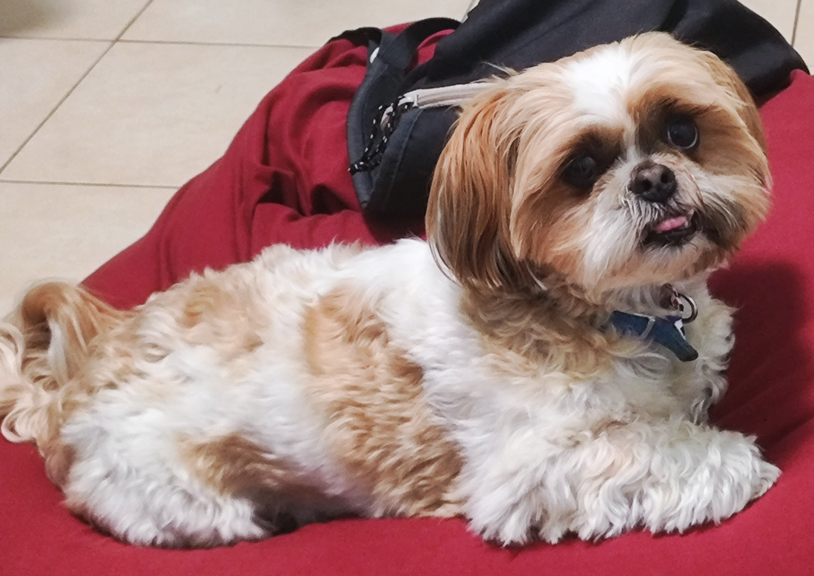

----------------------
control panel:
background changes:
color of the background:
rainbow background:
rainbow animation-duration:
(the lower the faster)
square changes:
general:
circle:
note: the square to circle animation works only if
the square is not rotating.
color changing animation duration:
(the lower the faster)
modes:
pit(dog)-mode:
spider-pig-mode:
mario-mode:
rotem-mode:
ender-mode:
creep-mode:
own-mode:
other:
music:
among us:
otherside:
super-mario:
your music:
other:
here's my dog:

for more photoes:
pit's page
spinning square app:
the spinning square app
hope you enjoyed!
-----------------------------